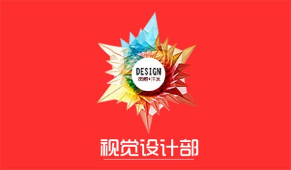
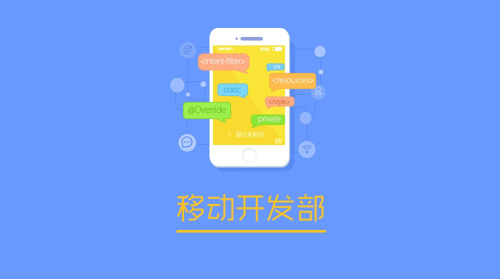
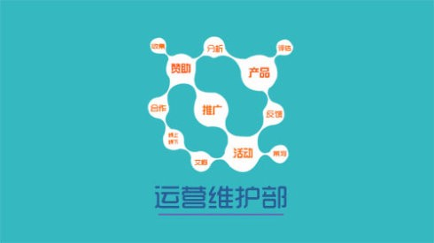

红岩网校工作站简介
重庆邮电大学“红岩网校”（http://hongyan.cqupt.edu.cn/）是党委领导下的由学生自己管理的网上素质教育阵地。自2000年诞生以来，一直以“党团宣传的窗口、理论学习的课堂、师生联系的纽带、学生喜爱的家园”为建站目标，历时九年的发展和十一次改版，“红岩网校”由最初的3个一级栏目、5个二级栏目发展到了今天的229个一级栏目、834个二级栏目，平均日访问量从起初的1500多人次发展到今天的10万余人次，成为了集政治性、思想性、教育性、服务性、娱乐性、交互性等特点为一体的综合性素质教育工作平台。近年来，“红岩网校”先后被授予“党的基层理论宣讲先进集体”、“全国高校十佳学生网站”、“全国教育教学成果二等奖”等荣誉称号，连续四年荣获“全国高校百佳网站”、“全国高校十佳思政类网站”等殊荣。李长春、袁贵仁等领导多次予以表扬性批示。 红岩网校工作站作为一个特殊的校级学生组织，其职责主要负责对“红岩网校”进行日常建设、管理和维护。目前共有设有站长团、管理规划部、程序研发部、视觉设计部、前端开发部、运营维护部等部门
办公室电话：023-62461084
地址：太极运动场西看台西四号门三楼
主页：http://202.202.43.125/
红岩网校工作站部门简介
站长团
红岩网校工作站站长全面主持工作站工作，围绕学校育人中心，以打造“党团宣传的窗口、理论学习的课堂、师生联系的纽带、学生喜爱的家园”为主线，参与校园网络文化建设。红岩网校工作站副站长协助站长开展工作，分管相应部门工作。
管理规划部
管理规划部是工作站日常工作的管理者，是整个工作站正常运作的重要纽带；Ta负责产品策划和原型设计、网校活动策划、日常管理；Ta是产品经理，是创意的集结点，是项目的瞭望塔，也是网校各部门沟通的桥梁；Ta负责管理网校的人员及财产、统筹产品的进度及监督、承办网校对内对外的活动。管理规划部需要耐心、细心与恒心，以及对产品的热情与责任心，需要学习Office、Ps、Ae、Axure等软件的操作，需要一个产品人的沟通能力和认真态度。
视觉设计部
视觉设计部是设计产品视觉交互界面，跟踪产品视觉效果的设计师。Ta负责进行网站的整体创意和美术设计，移动端和PC端用户界面设计；网页宣传海报设计；网站产品的FLASH动画推广设计；对视觉设计成果进行定期评估和研究，进行视觉元素的优化设计。部门发展方向是视觉设计师和UI设计师。
web研发部
WEB研发部分为前端和后台方向。前端主要负责网页的交互设计工作，根据设计图用HTML和CSS完成页面制作；对网站前端性能做相应的优化。而后端是负责数据库设计；利用LNAMP搭建功能全面、操作方便的后台管理系统。在WEB研发部学长学姐们的带领下，能你深深感受JavaScript、CSS、HTML、PHP的恶意。在这里大家将会写代码：会上课，那么就会有作业。Web部里的骚年们上可搭建服务器， 下可横扫pc移动h5。
移动开发部
移动开发部主要负责移动端的开发，以 Java，OC&Swift，C#为主要开发语言，涵盖Android，iOS，Windows 三个平台。在这里你可以学到App的开发制作。在这里学长一堆，学姐一个，学长们都是高冷的逗比；移动互联网就是我们的日常；从被大神虐哭到自己成为大神。在移动开发部你要对App感兴趣，对App制作有狂热的欲望。
运营维护部
运营维护部以产品、宣传 、组织、赞助为核心方向，是挖掘用户需求，推广网站文化的运营师。Ta负责网站线上线下活动的推广，收集并分析用户意见，提出产品功能升级方案，在网校运维负责网站内容的发布和栏目的更新、网站专题及线上线下活动的策划和制作，利用新媒体平台宣传网校的产品和活动，负责与其他部门组织联系，进行网上的合作共建。